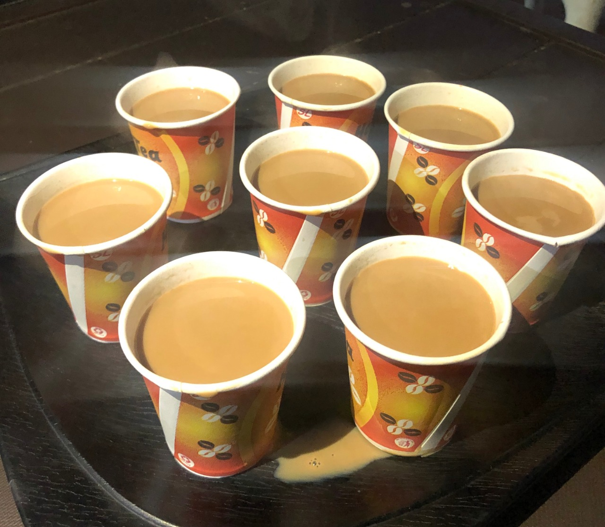

Some Highlights
Par-Tea
This was our routine since the wing 4 bois got together. At the stroke of midnight hour Madhur along with Sheenu would go to everyone's room and then take everyone to tech cafe for "Ek Cup Chai". This was that time of the day in which we would just take a moment from our busy and weird college lives and just sit down for a friendly talk.
2-Min Love
.jpeg)
Hostel+Maggie=❤️❤️❤️. The 2am hunger cravings are best cured by this epic mix of taste and humbleness. All these chefs and connoisseurs in image take the extra mile to perfect the recipe.Par abhi distribution toh shuru hone do, Rishabh ladega phir 😂😂😂.
Bham Bham Bhole
.jpeg)
This reminds us of our Shivratri adventures at Castle Tria. A wonderful amalgamtion of Holiness, crazy dancing and a slight amount of "Bhaang". Chhote chachha just missed the whole thing, bus hi chhoot gayi kya kare 😝😝
Chirpin' Away
.jpeg)
This was one of the rare moments in the wing where we got a chance to help "a winged animal" very generously (Asli jaanwaro ki baat ho rahi hai). So this birdie got his leg damaged, everyone came to the rescue aur phir ek mast photo session with the same bird.
New Year Fams
.jpeg)
This image marked the start of 2020 for us. A DJ night, followed by an unlimited supply of ice cream and (Cold)Drinks made this day an awesome treat to behold. There were fireworks and a fiery bonfire to conclude 2019 and welcome the new year with full vigour and happiness.
Bitcoin
.jpeg)
Ok, so we introduce you to the bitcoin of IIT Bhilai, Lays. We can't even hide it anymore. This image right here is the smuggling of the bitcoin. As soon as Tech Cafe gets the batch of Lays, Sheenu is the first one to purchase the 1st ten lays. It's the only thing for which the wing 4 bois may even pay more than its MRP.....
Naashta

It's Wednesday!!!!! The Chole Bhature Day of the week. Still many people(Manas) seem to miss this.This is one of the rare moments when we see Harshit eating breakfast. We would still be eating chole bhature in GEC if we would have missed the breakfast. Getting up for breakfast has become a privilege for EDITH...
An Adventurous Bday

So after last night's horrible incident, Goldi has finally recovered 😂😂😂😂. And now after the ADLD Lab Exam were are here at this unbelievable restaurant whose food was above our expectations. The main highlights of this party were people coming to the party in bermuda and slippers & Rishabh ordering like 30 naan/rotis for himself alone and not to forget the fact that this restaurant was on the other side of the town and the truck ride and 13 people inside an auto....